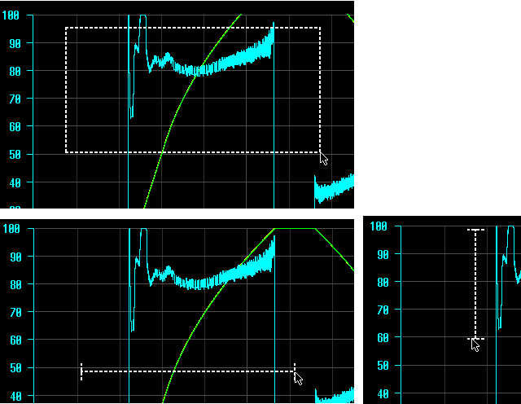

When a new trace result set is displayed in the "Diagnostics Trace" (e.g. when a trace recording has ended), the default zoom range is calculated in the following way:
Horizontally, the measurement time range fills the chart and the horizontal scrollbar fills the whole scrollbar range.
Vertically, the measurement data for all signals fill the visible chart area, but the scrollable range is bigger, so that there is some scrollbar range above and below the signal curves.
The size of the sliders on both scrollbars is automatically adjusted according to how much the chart is zoomed in. There is a minimum size, after which the slider does not get smaller but it is still possible to zoom in further.
The single step and page step values of both scrollbars will be automatically adjusted according to the current zoom range.
When zooming in or out, the center point of the zoom is as follows:
The center point of the visible chart area, when using keyboard shortcuts
The current position of the mouse cursor, when using <CTRL> + mouse wheel,
The middle point between the two fingers, when using touch gestures. You can zoom in or out by moving two fingers towards or apart from the zoom center point.
Each press of the keyboard shortcuts <CTRL++> or <CTRL+-> will zoom in or out by 10% of the visible range in the selected zoom direction(s). E.g.: If the original visible range is 10.0 seconds on the horizontal axis, then after zooming in, the new visible range will be 9.0 seconds.
While zooming in or out with keyboard, the center point of the visible chart area remains unchanged. E.g.: If the original visible range is 0.0 – 10.0 seconds and we zoom in by 10%, the new visible range will be 0.5 – 9.5 seconds.
An exception to the above rule is if the scrollbar is set so that we have reached the limit of the measurement data range at one end and try to zoom out further. In this case, only one end of the visible data range will be changed. (e.g. zooming out from 0.0 – 5.0 seconds to 0.0 – 6.0 seconds when the scrollbar is pulled fully to the left, as there is no data less than zero.)
Each move of the mouse wheel will zoom in or out by 5% of the visible range in the selected zoom direction(s).
In “Zoom” mode, pressing the left mouse button and dragging the mouse creates a rubberband rectangle. When the mouse button is released, the chart will be zoomed in so that the area within the selection rectangle will be visible.
The selection rectangle limits will be applied in both directions, therefore the horizontal and vertical axes may be scaled by a different amount (Aspect ratio will not be maintained).
If only horizontal or only vertical zoom direction is selected, then the rubberband rectangle will be replaced with a horizontal or vertical line. When the mouse button is released, the chart will be zoomed only in the selected direction.
